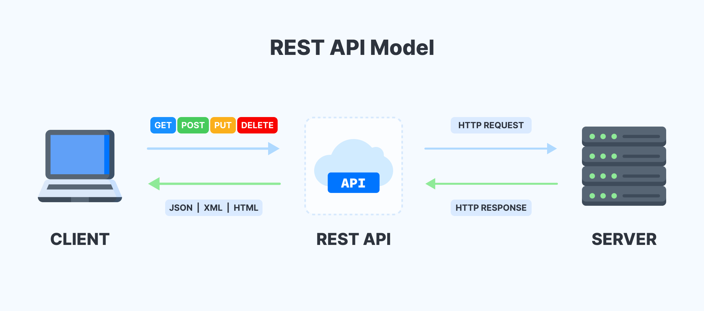

Introduction
API (Application Programming Interface)
What is it?
API (Application Programming Interface) is a set of functions that allow you to use the services of an application. An API can be distributed locally in a computer program (only accessible by an algorithm), or on the other hand, it may be intended to be used by a larger number of actors.
There are different types of APIs. In this course, we are mainly interested in Web APIs, that is, those that allow you to provide an interface that is accessible online. This is the case when we make a request to a server so that we receive the result of a processing.
RESTful APIs
A RESTful API (Representational State Transfer) is a web API architecture that relies on the HTTP protocol and uses its methods (GET, POST, PUT, DELETE) to allow clients to communicate with servers and retrieve data. RESTful APIs are widely used in web and mobile applications to provide a standardized and easy-to-use interface to access data.

Here are the main concepts of the RESTful architecture:
-
Ressources : resources are the entities exposed by the API, such as users, products, orders, etc.
-
HTTP Verbs: HTTP verbs (GET, POST, PUT, DELETE) are used to describe operations on resources. The GET verb is used to retrieve a resource, POST to create a new resource, PUT to update an existing resource, and DELETE to delete a resource.
-
Routes: Routes in a RESTful API are specific entry points in the API that define the available operations and accessible resources. A route is usually a URI (Uniform Resource Identifier) that uniquely identifies a resource and an HTTP method that specifies the action to be taken on that resource.
-
Representations: representations are the data formats used to represent resources, such as JSON, XML, or YAML. The most commonly used format is JSON (JavaScript Object Notation) because it is lightweight, easy to read and write.
-
HTTP Response Codes: HTTP response codes are used to indicate the result of an operation on a resource. For example, code 200 indicates that the request was processed successfully, code 201 indicates that the resource was successfully created, code 404 indicates that the resource was not found, etc.
By using these concepts, a RESTful API can provide a simple, consistent, and easy-to-use interface for accessing a server's data and services. Clients can use standard HTTP requests to access resources and interact with the server, making the RESTful API very flexible and easy to integrate into web and mobile applications.
Flask
Flask is a Python library for creating web applications and RESTful APIs. Here is an example code for creating a simple RESTful API with Flask:
from flask import Flask, jsonify, request
app = Flask(__name__)
# Define some data for our API
students = [
{
'id': 1,
'name': 'Alice',
'age': 20
},
{
'id': 2,
'name': 'Bob',
'age': 22
},
{
'id': 3,
'name': 'Charlie',
'age': 21
}
]
# Route to get all students
@app.route('/students', methods=['GET'])
def get_students():
return jsonify(students)
# Route to get a particular student
@app.route('/students/<int:id>', methods=['GET'])
def get_student(id):
student = [student for student in students if student['id'] == id]
return jsonify(student)
# Route to create a new student
@app.route('/students', methods=['POST'])
def create_student():
student = {
'id': request.json['id'],
'name': request.json['name'],
'age': request.json['age']
}
students.append(student)
return jsonify(student)
# Route to update an existing student
@app.route('/students/<int:id>', methods=['PUT'])
def update_student(id):
student = [student for student in students if student['id'] == id]
student[0]['name'] = request.json.get('name', student[0]['name'])
student[0]['age'] = request.json.get('age', student[0]['age'])
return jsonify(student[0])
# Route to delete an existing student
@app.route('/students/<int:id>', methods=['DELETE'])
def delete_student(id):
student = [student for student in students if student['id'] == id]
students.remove(student[0])
return jsonify({'result': True})
# Launch the app Flask
if __name__ == '__main__':
app.run(debug=True)
In this example, we have created a simple RESTful API that allows us to retrieve, create, update, and delete students. We have used the @app.route decorators to define the different routes of our API, as well as the corresponding HTTP methods (GET, POST, PUT, DELETE). We have also used Flask's jsonify function to return JSON data from our API.
To test our API, we can use a tool like Postman or simply make HTTP requests using the URL of our API (for example, http://localhost:5000/students to retrieve all students).